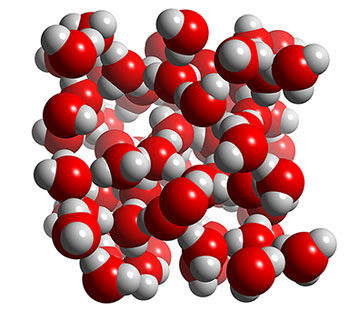
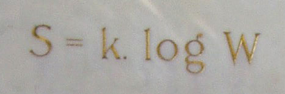

Statistical Mechanics 1
Leo Lue
Department of Chemical & Process Engineering
University of Strathclyde
Statistical mechanics
Ludwig Boltzmann, who spent much of his life studying statistical mechanics, died in 1906, by his own hand. Paul Ehrenfest, carrying on the work, died similarly in 1933. Now it is our turn to study statistical mechanics. Perhaps it will be wise to approach the subject cautiously.
(Opening lines of "States of Matter", by D.L. Goodstein).
Statistical mechanics

Overview
- Thermodynamics
- Microscopic dynamics
- Statistical mechanics
Basic concepts in thermodynamics
Thermodynamics is a phenomenological theory that describes the properties of systems, and their relationships, when in equilibrium.
- Properties:
- state vs path
- intensive vs extensive
First law of thermodynamics
First law of thermodynamics: Energy cannot be created or destroyed, but it can transform from one form to another.
- What do we mean by energy?
- kinetic, internal, thermal, electromagnetic, gravitational, etc.
- Heat
- Work
- pressure: \(-pdV\)
- interfacial tension: \(-\sigma dA\)
- chemical potential: \(\mu_\alpha dN_\alpha\)
- \(\delta W'\): other
Second law of thermodynamics
Clausius statement: No process is possible whose sole result is the transfer of heat from a body of lower temperature to a body of higher temperature.
Kelvin-Planck statement: No process is possible in which the sole result is the absorption of heat from a reservoir and its complete conversion into work.

Combined first and second laws
first law
\begin{align*} dE &= \delta Q - pdV + \sum_\alpha \mu_\alpha dN_\alpha - \delta W' \end{align*}second law
\begin{align*} \delta Q \le T dS \end{align*}combined first and second laws
\begin{align*} dE &\le TdS - pdV + \sum_\alpha \mu_\alpha dN_\alpha - \delta W' \\ \delta W' &\le - dE + TdS - pdV + \sum_\alpha \mu_\alpha dN_\alpha \end{align*}
Fundamental equation of thermodynamics
maximum entropy
Legendre transforms and free energies
maximum work
Calculus of thermodynamics
Maxwell relations
Importance of free energy
- Knowledge of the free energy of the system in terms of its "natural" variables, all equilibrium thermodynamics properties can be determined.
- The free energy represents the maximum work that can be extracted from a transformation if it is spontaneous or the minimum work required to perform a transformation if it is non-spontaneous.
Entropy

where \(W=\Omega\), and \(k.=k_B\).
Entropy
- The second law of thermodynamics, put simply, is that the most likely things will eventually happen and stay there.
- Richard Feynman says in his Lectures on Physics “… entropy is just the logarithm of the number of ways of internally arranging a system while <loaded>have it look the same from the outside</loaded>”.</p>
- Entropy is a measure of how much we don't know, i.e. it measures our lack of control-over/measurement-of the microstate.</p>
- Entropy is NOT disorder/chaos, its just that there's so many ways to make a mess…
- Sometimes order is more likely, i.e., look at any crystal transition.
Microcanonical ensemble
We have derived the key relationships of the <b>micro-canonical ensemble</b>, where the system is isolated (typically \(N,\,V,\,E\) held constant in molecular systems):
Other thermodynamic properties can be generated from here, just like in normal thermodynamics
We do not have pressure or any other work variable in this system, we'd need to have some "volume" and "pressure" that somehow contributes to the dice roll for that.
However, we do still have temperature, although it requires us to add the first law.
Averaging
<p> <em>God does not play dice. <span style="float:right;">A. Einstein</span></em> </p> <p style="clear:right;" class="fragment"> <em>God does play dice with the universe. All the evidence points to him being an inveterate gambler, who throws the dice on every possible occasion. <span style="float:right;">S. Hawking</span></em> </p> <p class="fragment"> You are the omnipotent being of your simulation, so you get to choose: <span style="font-size:75%">
</span> </p> <p class="fragment"> <b>But are these equivalent? If so, the system is <u>Ergodic</u>.</b> </p>
Dynamics of the simple harmonics oscillator
<p>
Consider the <b>S</b>imple <b>H</b>armonic <b>O</b>scillator:
<img src="img/SHO.gif"><br/>
</p>
<p class="fragment">
The <b>microstate</b> variables, in this case position,
\(r\), and velocity, \(v=\dot{r}\), can be collected together to
form a vector, \(\boldsymbol \Gamma\), which exists in <b>phase space</b>.</p>
<div class="attribution backbox">
Image:
<i><a href=" " title="User:XRay">Mazemaster - public domain</a>
</i>
</div>
" title="User:XRay">Mazemaster - public domain</a>
</i>
</div>
simple harmonic oscillator
The microcanonical SHO system visits all regions of phase space pretty quickly, it is therefore Ergodic. Stat-Mech and (molecular) dynamics averages are equivalent.
Hamiltonian
<p> Its not surprising that it forms a circle in phase space, as the total energy (called the Hamiltonian), is the equation of a circle in \(r\) and \(v\).
where \(k\) is the spring constant and \(m\) is the mass. </p> <p class="fragment"> What is all of phase space like? We can sample all energies, \(U\), and plot the "flow" of trajectories: </p>
phase space "flow"

The systems flow around phase space, the trajectory lines do not cross, thus this behaves exactly as a incompressible fluid.
Whatever ensemble of starting states we begin with, there's a symmetry to its motion through phase space. If evenly distributed, it will remain evenly distributed.
Liouville's Theorem
We can treat an ensemble of systems flowing around phase space as an incompressible fluid with density \(\rho(\boldsymbol{\Gamma})\), thus it behaves as follows:
which should be familiar to you as a simplification of the continuity equation from any fluid flow class you might have had:
This is the foundation of kinetic theory, as from here comes the BBGKY heirarchy and ultimately Boltzmann's/Enskog's equation. p>
Back to ergodicity.
Double well potential
The SHO system has a parabolic potential energy:
We can make a double-well potential simply by shifting the spring rest position away from the origin:
Double well potential
Are the systems in the lower energies (closer to the centre of the orbits) ergodic? No, they cannot visit each other even though they're at the same energy level (thus at the same state)!
double-well dynamics

Microstates in \(U=0.25\) are energetically isolated from each other, thus its not ergodic; however, a lot of properties (i.e. average velocity) will still work out!
Ergodicity
Phase space is so unbelievably big even for small systems it actually “feels” impossible for any trajectory to meaningfully visit all microstates (or come close enough to do so) in finite time.
Practically, in simulation we typically just check averages are converging and hope we are "effectively" ergodic. Like a lot of things in simulation, you presume it might be true but verify as best you can.
There are many techniques for accelerating dynamics past energy barriers and "encourage" good sampling of phase space which you will learn about in your MC lectures. These are also applied more frequently to MD simulations too.
Statistical mechanics
The ideas of statistical mechanics are simple, yet the implications and relationships it provides are deep and meaningful.
My dice example should make you believe that its applications are wider than just molecular systems. Isaac Asimov even explored the statistical mechanics of galactic societies in his excellent (but a little dated) Foundation Series. Who knows where it will turn up next.
While much of the derivations covered here are "ancient", there's still intense research into the field, and many more surprising results to find.
I hope you're keen to find out more, and will look at the statistical mechanics underlying all your upcoming lectures as a mountain to climb up, rather than a chasm to fall in.